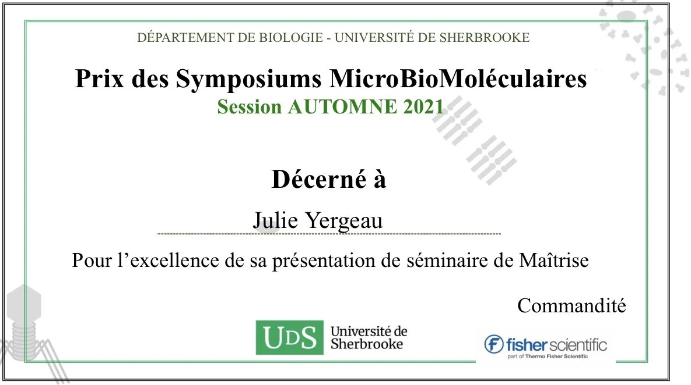

Our treasurer Julie
Yergeau just finished her master’s titled “The identificatoin of
species of Phytophthora in the cultivars of Christmas trees in
Quebec and the validatoin of the pathogenicity of P.
abietivora” !
In addition, she won the prize of best presentation during the
Symposiums MicroBioMoléculaires of the Fall Session of 2021 from the
Université de Sherbrooke.
Congratulations, Julie!

2021-11-24
Our Vice-President in Networking Romaric
Armel Mouafo Tchinda finished successfully his PhD degree on
Phytopathology, with the thesis “Comparative epidemiology of the two
main clades of Plasmopara viticola prevalent in eastern Canada”, under
the directon of Dr. Carole Beaulieu and Dr. Odile Carisse.
Congratulations to all involved for the hard work and specially to
Dr. Isabel
Desgagné-Penix for collaborating with researchers worldwide!
2021-08-30
Do you want to know more about the challenges faced by postdocs, the
life of a bioinformatician or the academic path of our president, Dr. Karen
Cristine Goncalves?
Watch her interview by the doctorate student Nikunj
Sharma, from the Université du Québec à Trois-Rivières!
2021-05-05
Our president, Karen
Cristine Goncalves, successfully finished her PhD in Cellular and
Molecular Biology, with the thesis “Unrelated Fungal Rust Candidate
Effectors Act on Overlapping Plant Functions”, under the direction of
Dr. Hugo
Germain and Dr. Isabel
Desgagné-Penix.
Say hello to our two new members of the CSIPC: Snehi Gazal
(VP Communication) and Valeria
Parra (VP Networking)!
We thank Claire
Letanneur, Teura Barff
and Marianne
Bessette for their work. They may no longer be part of the executive
committee, but they will always be welcome to our meetings and
events.
2021-01-27
Congratulations to Michelle Boivin (UQTR), a student at the Centre
SÈVE for her intriguing project of revalorizing organic matter.